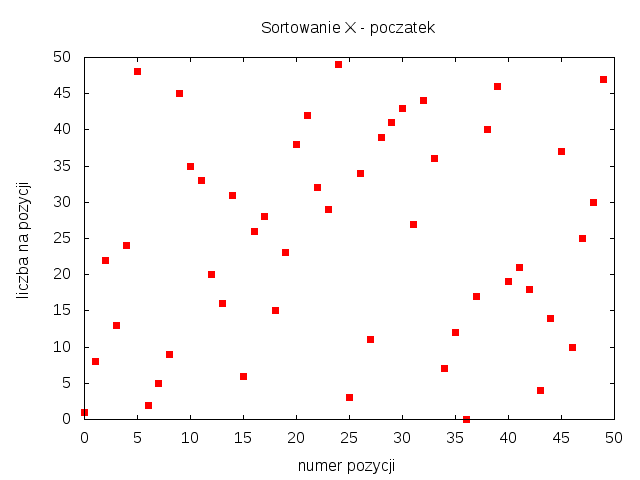
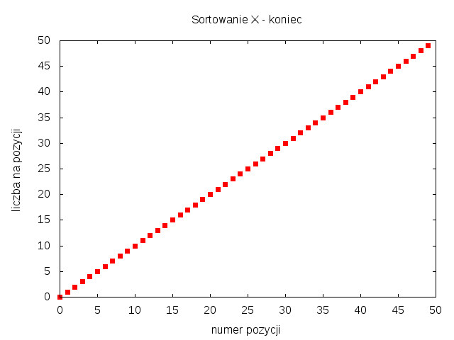

OBOWIĄZKOWE DO PRZESŁANIA: 16.1 i jedno z pozostałych
W rozwiązaniach należy umieścić kod testujący przygotowane funkcje.
Przygotować moduł Pythona z funkcjami tworzącymi listy liczb całkowitych
do sortowania. Przydatne są m.in. następujące rodzaje danych:
(a) różne liczby int od 0 do n-1 w kolejności losowej,
(b) różne liczby int od 0 do n-1 prawie posortowane
(liczby są blisko swojej prawidłowej pozycji),
(c) różne liczby int od 0 do n-1 prawie posortowane w odwrotnej kolejności,
(d) n liczb float w kolejności losowej o rozkładzie gaussowskim,
(e) n liczb int w kolejności losowej, o wartościach powtarzających się,
należących do zbioru k elementowego (k < n, np. k^2 = n).
Dla wybranego algorytmu sortowania zbadać jego zachowanie w czasie działania. Do kodu wstawić funkcję zapisującą stan listy na danym etapie sortowania. Dane można zapisywać w pliku sort1.dat. w dwóch kolumnach: numer pozycji na liście i wartość liczby na tej pozycji. Liczby w wierszu może oddzielać spacja lub tabulacja. Wtedy poglądowy rysunek można wygenerować za pomocą skryptu dla programu Gnuplot. Poniżej podane są skrypty tworzące rysunki w formatach EPS, PNG, PDF.
# Plik sort1eps.gnu set term postscript eps enhanced color 22 set output "sort1.eps" set title "Sortowanie X" set xlabel "numer pozycji" # opis osi x set ylabel "liczba na pozycji" # opis osi y unset key # bez legendy plot "sort1.dat" using 1:2 with points pt 5
# Plik sort1png.gnu set term png set output "sort1.png" set title "Sortowanie X" set xlabel "numer pozycji" # opis osi x set ylabel "liczba na pozycji" # opis osi y unset key # bez legendy plot "sort1.dat" using 1:2 with points pt 5
# Plik sort1pdf.gnu set term pdf enhanced set output "sort1.pdf" set title "Sortowanie X" set xlabel "numer pozycji" # opis osi x set ylabel "liczba na pozycji" # opis osi y unset key # bez legendy plot "sort1.dat" using 1:2 with points pt 5
# Polecenia generowania rysunku w powłoce systemu UNIX. $ gnuplot sort1eps.gnu # powstanie plik sort1.eps $ gnuplot sort1png.gnu # powstanie plik sort1.png $ gnuplot sort1pdf.gnu # powstanie plik sort1.pdf
# Generowanie rysunku z poziomu skryptu pythona.
import os
os.system("gnuplot sort1eps.gnu")
os.system("gnuplot sort1png.gnu")
os.system("gnuplot sort1pdf.gnu")
Przykładowe rysunki dla różnych liczb od 0 do 49, które przed sortowaniem są w kolejności losowej.


Animacje w Pythonie (gif, mp4, mpeg):
(1) gnuplot
(2) Matplotlib: FuncAnimation, ArtistAnimation
(3) pip install celluloid (Py3.6+, używa matplotlib)
(4) Plotly
https://medium.com/@kirthi.tej92/animations-using-python-a-comprehensive-guide-7d0e075e5c6e
Animations Using Python: A Comprehensive Guide
# Przykład rysowania danych w matplotlib.
import random
import matplotlib.pyplot as plt
n = 50
x = list(range(n))
y = list(range(n))
random.shuffle(y)
plt.title("Sortowanie X")
plt.xlabel("numer pozycji")
plt.ylabel("liczba na pozycji")
plt.plot(x, y, 'rs') # red squares
plt.show()
#plt.savefig("plot1.png") # zapis rysunku do pliku PNG
Poprawić wybrany algorytm sortowania, aby przyjmował jako dodatkowy argument funkcję porównującą elementy na liście [przykład na wykładzie dla funkcji bubblesort()].
Porównaj czasy działania wybranych algorytmów dla listy zawierającej n różnych liczb, przy n = 10^2, 10^3, 10^4, 10^5, 10^6.
Zaimplementować w języku Python algorytm sortowania, który nie został omówiony na wykładzie. Dołączyć krótką informację o cechach algorytmu.
Napisać iteracyjną wersję funkcji quicksort().
Zmienić funkcję mergesort() tak, aby przy okazji sortowania przez scalanie zliczała inwersje w sortowanej tablicy L. Inwersję tworzy para liczb na pozycjach i, j, jeżeli i < j, oraz L[i] > L[j]. Nie wolno pogorszyć wydajności sortowania O(n log n). [trudne]
Napisać funkcję frequencysort(), która sortuje liczby w tablicy L zgodnie z częstością ich występowania. Jeżeli dwie liczby mają taką samą częstość występowania to o kolejności decyduje indeks pierwszego pojawienia się liczby w tablicy L. Wydajność sortowania nie powinna być gorsza niż O(n log n).